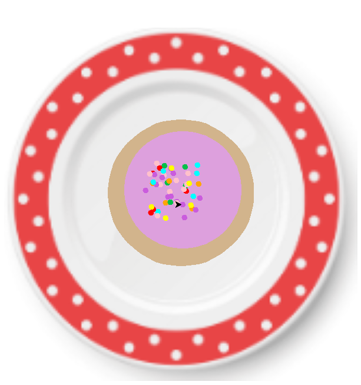
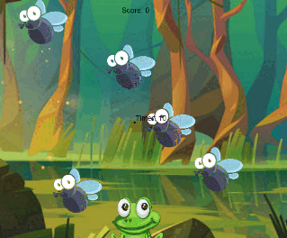

Home
Portfolio
About Me
This is my Portfolio Page!
Sugar Cookie Decorator 1.1.9 Project!

Our game allows the player to customize their sugar cookie by answering a series of questions. In our program we used for and if statements as well as conditional statements.
Fly Catcher 1.2.5 Project!

The player must click as many flies as possible before the timer runs out. In our program we used user input, incorporated exsiting turtle methods, and used code statements.
Monkey Business Scratch Project!.

We created a catcher monkey game where the objetive is to collect as many bananas as you while avoiding the apples. In our scratch code with used many lists and events.
Black Jack game written in Python.
Modified bits in pictures.
Use data files to create graphs.
Using netlogo do remix of illusions.
Interactive Fiction Rags to Riches.